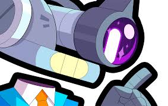

Cosmo è il capo degli astronomi all'osservatorio dello starr park. Oltre a istruire i visitatori sui misteri
dell'universo, scruta costantemente le stelle in cerca di qualcosa...
| Salute | Velocità di movimento |
|---|---|
| 3400 | NORMALE |
Cosmo spara 3 proiettili che orbitano in cerchio e che si distanziano l'uno dall'altro sempre di più,
a mano a mano che avanzano. Quando si spostano, aumentano costantemente di dimensione
e a causano danni via via maggiori.
| Danni | Portata | Velocità di ricarica |
|---|---|---|
| 1000 | LUNGA | LENTA |
Cosmo spara un magnete con un polo positivo che, attaccandosi a un nemico,
attirerò con grande efficacia i proiettili degli alleati
| Danni | Portata | Durata |
|---|---|---|
| 500 | MOLTO LUNGA | 6s |